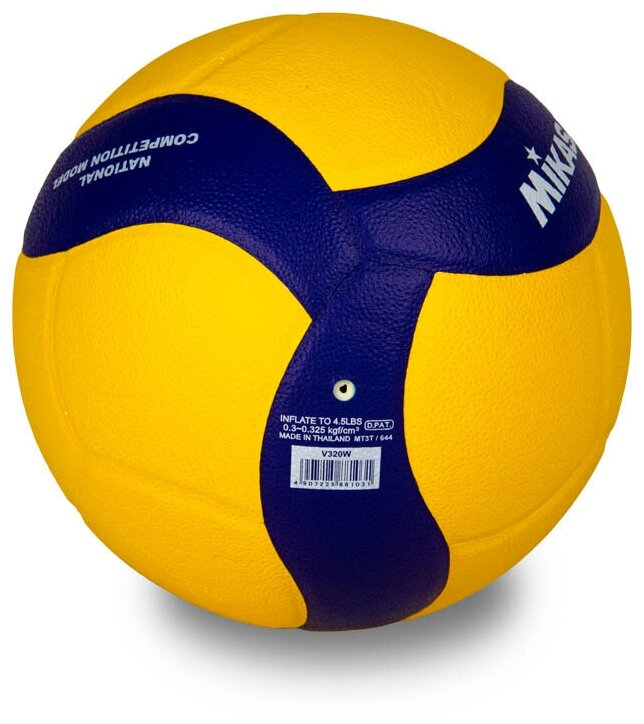
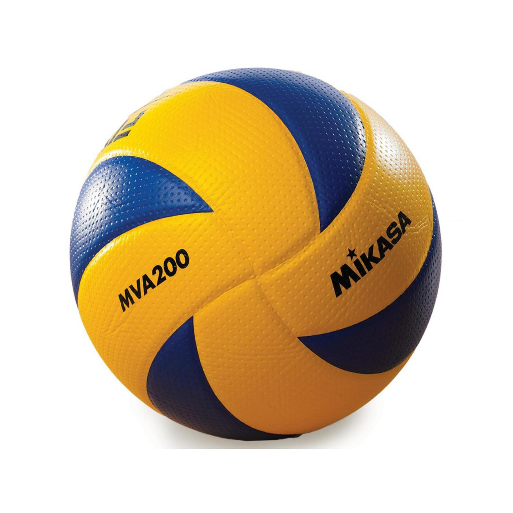
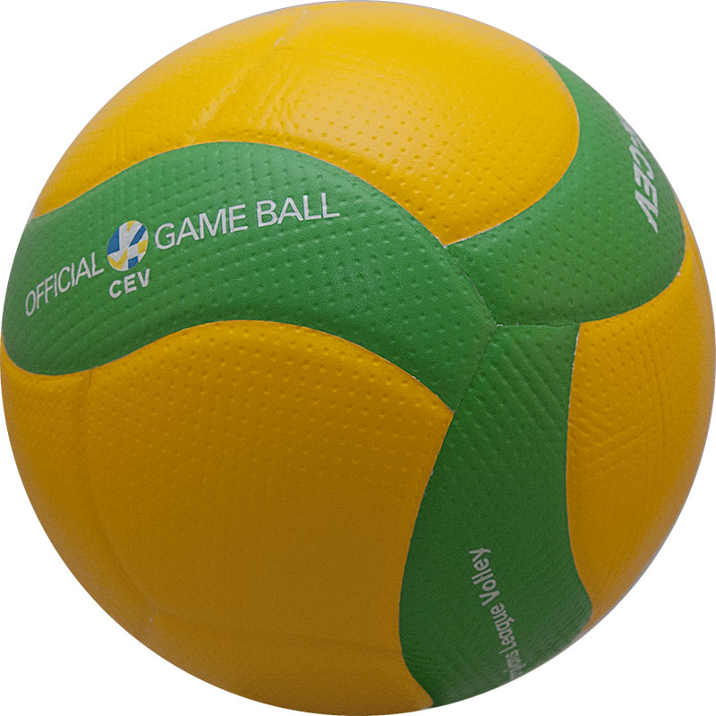
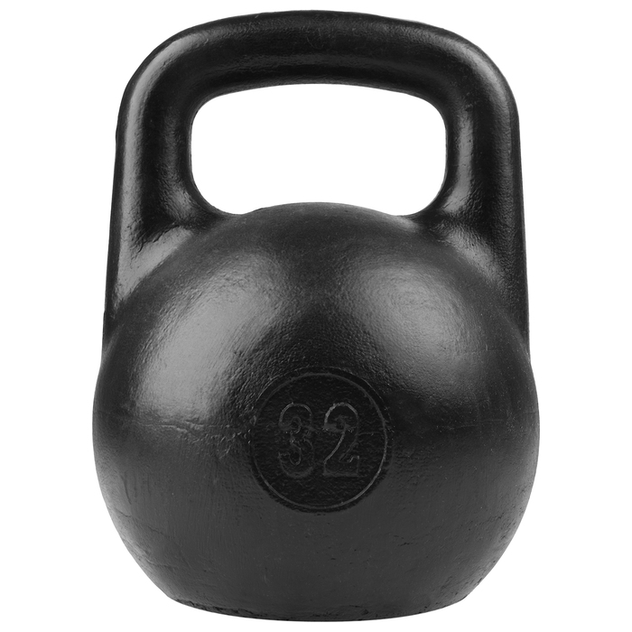

Казанская звезда второго плана, «выходец из Кореи» и связка «Пе-Пе» – кто из иностранцев попрощался с российской волейбольной Суперлигой.

Туомас Саммельвуо в последних матчах основного этапа дал поиграть дебютантам. Результат значения не имел, но Россия всё равно выиграла.
это мяч!
и это мяч!
снова мяч!
а это не мяч!